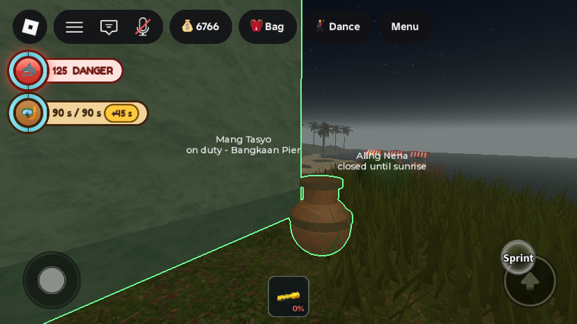
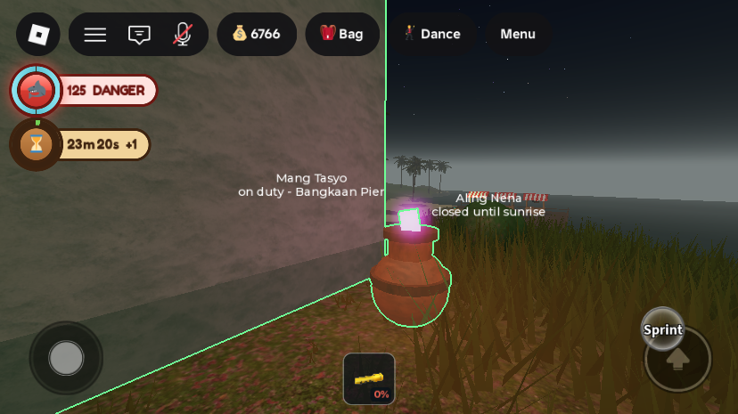
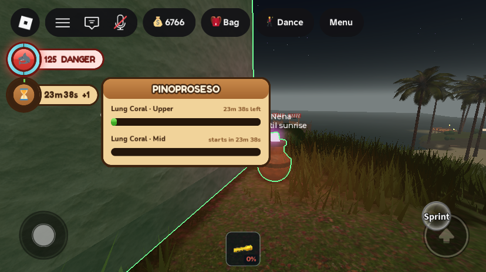
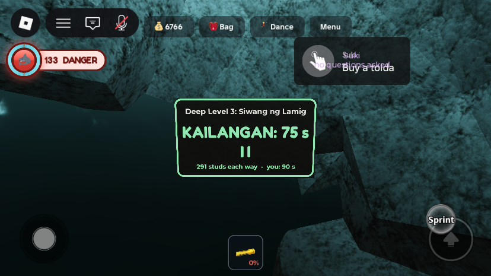
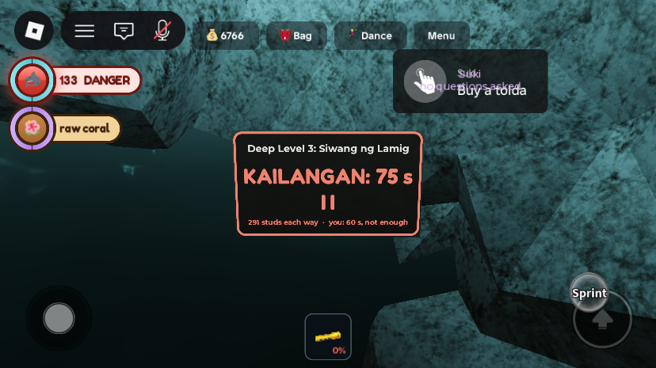

Phase 3: air in seconds, and Lung Corals processed on land
What was asked
- "Show 45 for 45 s instead of a percentage", so players notice when they have more air than normal, and "highlight the air UI when a Lung Coral takes effect."
- Picking up a Lung Coral should not grow your lungs straight away: "you bring it to land, place it, and it takes about one game day to process, with a dropdown showing the status."
- The deep-run plates "look buggy. Remove them or make them better."
- The owner accepted the plan's recommendations: one coral processed at a time, in a banga (clay jar) at the bodega, still processing while offline, no stealing in v1, and plates remade as wall markers (removed if the screenshots still looked wrong).
What changed
1. Air in seconds, with a gold chip for extra air

- The air badge in
StatusHudreads "38 s / 60 s" instead of a percentage. The ring still fills with the air left, turns gold at 55% and red at 25%, as before. - Any max above the base lung shows as a gold "+15 s" chip in the badge's value tab. The base comes from the new player attribute
BreathBase(45), set byBreathService. - When a coral is absorbed, the badge pulses gold three times (ring glow and value tab), the max counts up from the old number to the new one over 1.4 s, the badge stays on screen for 8 s even on dry land, "Lungs stronger!" floats beside it, and a toast plus a chat line say "Lung Coral absorbed: you can hold your breath for 75 s now."
- That floating word now sits just past the end of the value tab, which grew with the seconds text. It also includes the top-bar inset, which the old placement left out.
2. Lung Corals are carried home and processed in a banga


- Picking up a coral (prompt now "Pick up · Lung Coral (hilaw)") gives a raw coral and no air. It rides home with your finds, shown as a new 🌺 "raw coral" badge. The coral emoji itself does not render in Roblox (it drew a blank box), hence the hibiscus.
- Corals are now per player. Before, the first diver to take one destroyed the model for the whole server until it restarted. Now the three corals (Upper, Mid, Deep) stay in the world, each player can take each once, and
LungCoralClienthides the ones you already have on your screen only. - Drowning with a raw coral loses it, and it grows back where you found it (chat: "The raw Lung Coral slipped out of your sack as you blacked out...").
- The banga is built by
LungCoralServicebeside every bodega that is placed, at its front corner and seated on the ground. It is part of the bodega model, so it goes away when the bodega is packed or broken. Its prompt answers only the owner ("That's X's banga." to anyone else). With a raw coral it takes all of them; with none it says how long is left, or that it is empty. - Processing takes one island day (
PROCESS_SECONDS= 1440 s), one coral at a time. More corals queue behind. The queue is saved on the profile as unix times, so it keeps running while the player is offline or on another server. Anything that finished while they were away completes on their first second back, and its message waits 8 s for the HUD to load. - Pinoproseso: a new ⏳ badge in the left status column appears whenever something is processing. Its ring fills with the current item's progress, it counts down ("23m 38s +1" means one more waiting), and tapping it opens a dropdown listing every item with a bar and its time left or start time. It is built generically:
ProcessingServicecan take any timed kind later. - Changed from the plan: the plan put Pinoproseso in the top bar. The saved UI rule is to leave the top bar untouched, so it lives in the status column instead.
- The 3-coral cap counts absorbed + carried + processing. Players who took corals under the old instant rule keep their upgrades; they just have fewer left to find. The coral they already took is not recorded by name, so they could pick that same one again, but the cap still stops them at 3.
- No stealing in v1: the banga only answers its owner, and a broken bodega spills nothing from it, because the queue is on the profile, not in the jar.
3. Deep-run markers are stone slabs on the wall


DeepRunServiceno longer builds floating BillboardGuis. Each of the six deep runs gets a 7 × 4 stud slate slab (Marker_<key>) mounted on the chamber wall a few studs to one side of the tunnel mouth, facing back into the chamber. The text is a SurfaceGui on its face, so it can't float, clip through rock or change size with distance.- The wall is found by raycasting into the terrain beside the mouth. The slab is then pushed out until it clears the rock at its corners, because the first try sank into the lumpy voxel wall. All six found a wall; if one ever doesn't, it falls back to a standing stone on the chamber floor (attribute
Mountsays which). - The face reads the run's name, "KAILANGAN: 75 s", one carved tally mark per coral the run was solved for, and "291 studs each way · you: 90 s". The seconds come from
BreathService(45 + 15 per coral), not a hard-coded table. - Each player sees it tinted for their own lungs by
LungCoralClient: green if their max air coversNeedSeconds, red ("not enough") if it doesn't. It repaints when their max changes.
All changes
| Instance | Change | |
|---|---|---|
ServerScriptService.ProcessingService | new | ModuleScript. The timed queue: RegisterKind(kind, {label, seconds, onDone}), Start(player, kind, tag), List, Count, FastForward (test support), Init. A 1 s tick completes finished items and publishes ProcessingJson. |
ServerScriptService.LungCoralService | new | Script. Coral prompts (moved from CaveBootstrap), per-player state, loss on PlayerDrowned, the banga beside each bodega, the lungcoral processing kind and its absorb message. Studio-only hook ServerStorage.DebugCoral. |
StarterPlayer.StarterPlayerScripts.LungCoralClient | new | LocalScript. Hides corals you already have; tints the deep-run markers for your max air. Re-applies as the cave streams in and after the shark view (SharkClient) restores what it hid. |
ServerScriptService.CaveBootstrap | edit | Lung Coral loop removed (it gave the upgrade instantly and destroyed the coral for everyone); header and start-up print updated. It still starts BreathService and runs the Perlas Hollow treasure. |
ServerScriptService.BreathService | edit | Sets BreathBase on join. AddUpgrade comment: it is now called when processing finishes, not on pickup. |
ServerScriptService.DeepRunService | edit | Rewritten marker builder: wall mount (mountFor), stone slab with SurfaceGui, attributes Tier, NeedSeconds, LengthStuds, Mount. Requires BreathService for the seconds. |
ServerScriptService.PlayerProfileService | edit | Load defaults for the new fields CoralsTaken and Processing. |
StarterPlayer.StarterPlayerScripts.StatusHud | edit | Air in seconds, gold chip, absorb pulse and count-up; new raw coral and Pinoproseso badges; the dropdown; flash-word placement. |
StarterPlayer.StarterPlayerScripts.NotificationController | edit | Chat colours for the new DiveFeedback kinds coral and absorbed. |
Workspace.IslaMarahuyo.Activities.CaveSystem.LungCoral_*.Stalk.CollectPrompt | edit | ActionText "Pick up", ObjectText "Lung Coral (hilaw)" (also set at runtime). |
Workspace.IslaMarahuyo.Bodegas.Bodega_*.Banga | runtime | Model (Body, Neck, Rim, Band, Coral + PointLight, BangaPrompt) built when a bodega is placed. |
Workspace.DeepRunMarkers.Marker_* | runtime | Stone slabs; they replace the old invisible Mouth_* anchor parts that carried the billboard plates. Built at server start, as before. |
New profile fields: CoralsTaken ({[name] = "carried" | "processing" | "absorbed"}) and Processing (array of {kind, tag, startsAt, endsAt}). New player attributes: BreathBase, CoralsTaken (comma list), CoralsCarried, ProcessingJson. New DiveFeedback kinds: coral, absorbed. No new remotes. Tuning: LungCoralService.PROCESS_SECONDS = 1440, JOIN_GRACE = 8; DeepRunService.SLAB = 7 × 4 × 0.6. Every edited script was compile-checked with loadstring before saving; nothing was removed from the map.
Testing
Three solo playtests on MERS_Cov2, each ended by kicking the player from the Server. That account already had all 3 corals, so the new Studio hook set it to 1 for the tests (DebugCoral "lungs") and put it back to 3 with an empty coral record and queue ("reset") before every kick. No script errors in the output.
- Real pickup: the Upper coral's prompt, held by the client with the character anchored beside it, gave "carried". The coral went invisible, with its prompt off, on that client only; the server model stayed. The raw coral badge appeared. (Moving the character from the client dropped it through the unstreamed cave, and an anchored client move never reached the server, so the server did the move.)
- Drowning (
DebugDrown) with the raw coral cleared it, and the coral showed again on the client. - Banga: a stone bodega placed at (-320, 34, -40) got its banga on the ground at the front corner (jar bottom 34.1, ground 34.25). Placing a coral said "Ready in 24 min, even if you leave." A second coral said "Lung Coral queued behind the one already in the banga. Ready in 48 min." The coral glowed and the prompt changed to "Check".
- Processing:
DebugCoral "finish"brought the queue forward. The first coral finished: max air 60 → 75, record Upper = absorbed, and Mid started where Upper ended. A client log of the second finish showed theabsorbedevent, the badge counting 75 → 80 → 85 → 90 over about 1.4 s, and staying up for 8 s. The chip read "+30 s", then "+45 s". - Dropdown position: the first shot had it about one top-bar height too high; after the inset fix it lines up with its badge (screenshot above). The "Lungs stronger!" word was measured centred on the air badge, just past its tab.
- Markers: all six mounted on walls. At 75 s max the four 60 s and 75 s runs were green and the two 90 s runs red; screenshots at 90 s and 60 s above.
Gaps and things to check
- The gold pulse itself was not caught on camera. It lasts about 2 s and the capture tool takes longer than that. It is checked by the client log above only. Watch it once when a coral finishes.
- Not seen: an offline finish on rejoin, and a coral taken by the prompt in normal play (the test anchored the character). The banga beside a wood bodega and next to a second bodega slot is untested; each placed bodega gets its own banga.
- Axe swings on the banga count as hits on the bodega, since the jar is part of its model. That seems right, but it is untested.
- Shark view: SharkClient hides and restores cave markers by saving LocalTransparencyModifier. LungCoralClient re-applies 0.2 s after SharkRole changes, which should win, but a Pating ending their job near a taken coral was not tested.
- The coral glows almost white. The neon pink blows out at night; a lower-brightness colour may read better.
- The old welcome/tutorial panel popped up during the last playtest (it was hidden for the shot). It is replaced in Phase 8.
- Quick-test values: none left in the place. The test account was restored to 3 corals with an empty record and queue.
Bodega.AxeDamage = 20from before is still there, to be restored in Phase 7.